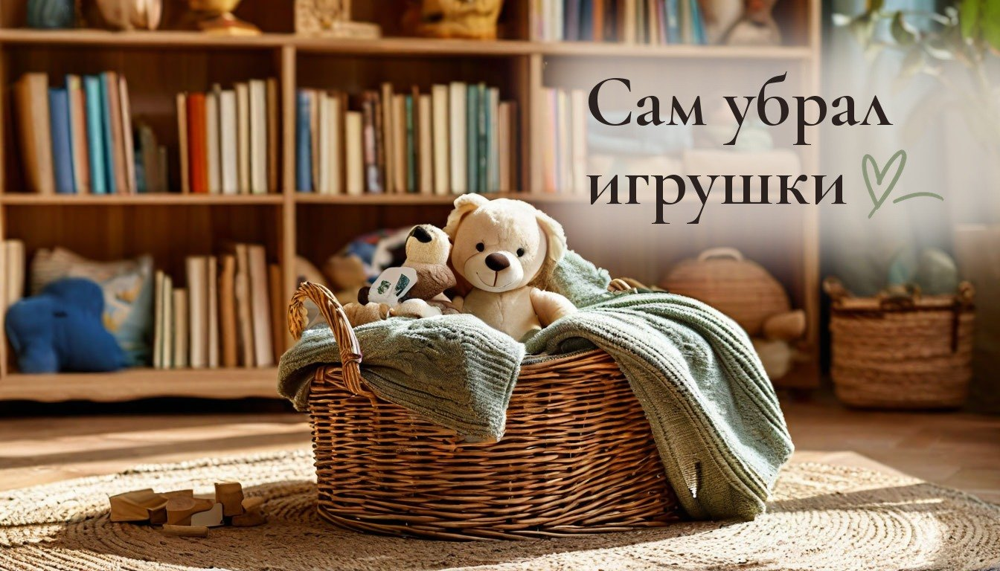
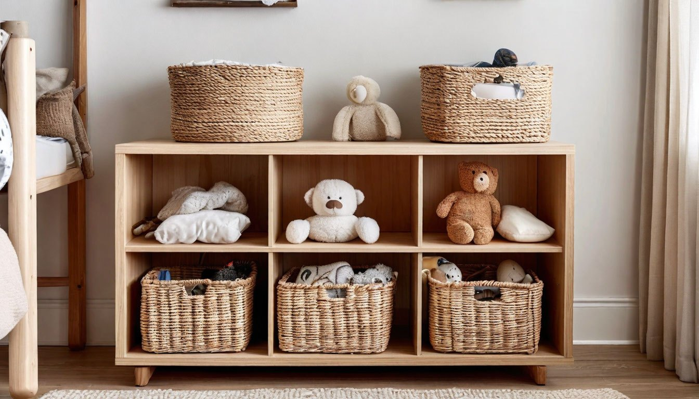
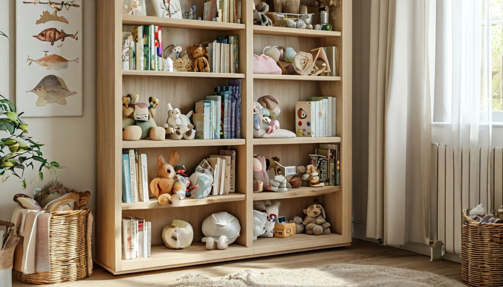

Как приучить ребёнка убирать за собой: 5 привычек родителей, которые мешают

Вечер, я в третий раз прошу убрать вещи, а на полу в детской по-прежнему лежат носки, конструктор и тетрадь. Я сдаюсь и убираю сама. Знакомо?
У меня двое детей, дочке десять, сыну шесть, и разбросанные вещи раздражают меня больше, чем пыль. Я долго думала, что дело в характере детей. Но чем больше разбиралась, тем яснее видела: часть проблемы в том, как устроены наш дом и наши просьбы.
Это вторая история из серии «Дом, где двое детей, кошка и хомяки». Здесь не будет советов психолога, только то, что касается быта и порядка.
Просьба «убери в комнате» слишком большая
Для взрослого «убери в комнате» понятно. Для ребёнка это огромная непонятная задача: с чего начать, куда что класть и когда уже можно остановиться.
Что делать: просить одно конкретное действие. «Сложи машинки в синюю коробку», «повесь куртку на крючок». Маленькая задача выполняется, большая откладывается. Со старшими можно договориться о списке из трёх пунктов: стол, пол, одежда на стул.

У вещей нет своего места
Если игрушки, книги и одежда каждый раз лежат в разных местах, убирать их просто некуда. Ребёнок не ленится, он правда не знает, куда это деть. А взрослый, который каждый раз говорит «положи на место», имеет в виду место, которое существует только у него в голове.
Что делать: у каждой группы вещей должен быть свой «домик». Коробки без крышек, крючки, корзины. Младшим помогает наклеить на коробку картинку того, что внутри. Тогда и шестилетний без подсказок поймёт, куда положить кубики, а куда фломастеры.
Места хранения неудобные
Самый неочевидный пункт. Взрослые расставляют полки и шкафы по своему росту. Шестилетнему трудно дотянуться до верхней полки или открыть тугой ящик, и вещь остаётся на полу просто потому, что так проще.
Что делать: присесть на уровень глаз ребёнка и посмотреть на комнату его глазами. Всё, что он должен убирать сам, переложить ниже и в открытые коробки, куда можно бросить вещь одной рукой. Крючок для куртки на высоте плеча ребёнка работает лучше любых напоминаний.

Слишком много всего на виду
Когда в комнате доступны сразу все игрушки, к вечеру они оказываются на полу. Убрать сорок предметов трудно даже взрослому, а у ребёнка опускаются руки.
Что делать: часть игрушек убрать в шкаф и менять раз в неделю-две. Старые игрушки после «отдыха» кажутся новыми, а убирать каждый вечер приходится меньше. Ребёнок может сам выбрать, какие коробки остаются в комнате на эту неделю.
Уборка не имеет конца
Ребёнку трудно делать то, у чего не видно финиша. Фраза «убирай, пока не будет чисто» ощущается как наказание без срока.
Что делать: убирать вместе десять минут под таймер или под две любимые песни. Когда время вышло, уборка закончена, даже если не всё идеально. Привычка важнее результата. А если взрослый в это время убирает свою часть рядом, ребёнку легче включиться.
От автора
Я не могу сказать, что у нас дома всё решено. Носки на полу всё ещё появляются, а хомяки добавляют опилок к общему беспорядку. Но я перестала ждать, что дети сами догадаются, как нужно, и стала больше думать о том, удобно ли им вообще убирать.
Мне кажется, порядок в детской вырастает не из строгости, а из понятных правил и вещей, у которых есть свой дом. И ещё из терпения, которого у меня, честно, хватает не всегда.
Это вторая история серии «Дом, где двое детей, кошка и хомяки». Дальше расскажу, как устроить место для уроков, чтобы на столе не копился хлам. Подписывайтесь, чтобы не пропустить.
А у вас дети убирают за собой сами, или эта битва ещё идёт?